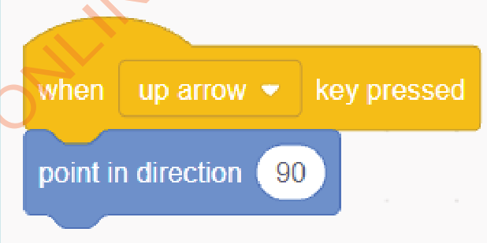

Activity 15
Creating a game to make a ‘Sprite’ (Cat) move in four directions
The following steps will guide you to create a game that makes a Sprite move up, down, left, and right while making sounds.
Steps
1. Click/press on the ‘Events’ block menu.
2. Drag/use arrow keys and drop the ‘when key pressed’ block into the script area. Then select ‘up arrow’.
3. Click/press on the ‘Motion’ block menu.
4. Drag/use arrow keys and drop the ‘point in direction’ block into the script area. Then attach this block to the ‘when key pressed’ block, as shown in Figure 45.

5. Change the degrees in the ‘point in direction’ block from 90 to 0, as shown in Figure 46. This will make the Sprite move up when the ‘up arrow’ key is pressed.